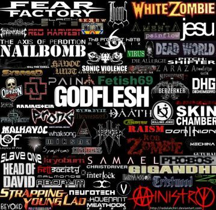
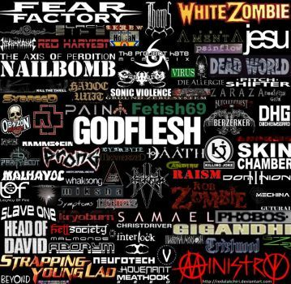

|  |
El metal industrial es un subgénero del heavy metal que mezcla el mismo con la música industrial (ya sea industrial clásico, electro-industrial o EBM). Entre los principales artistas del género se incluyen a Ministry, Godflesh, KMFDM, Nine Inch Nails y Rammstein.
|  |